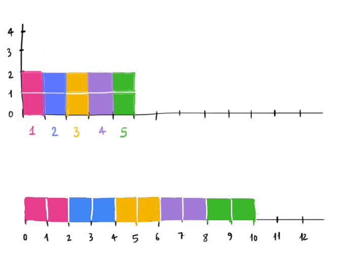

L'atleta decide di correre ogni giorno la stessa quantità di kilometri. Quanti ne deve
correre al giorno per coprire sempre \(10\) km in cinque giorni?

Diremo che l'atleta ha corso in media \(2\) km al giorno.
Per ottenere la media abbiamo sommato ciascuna delle distanze percorse ed abbiamo diviso il
risultato per il numero di allenamenti.
Generalizziamo la formula.
Consideriamo i dati \(d_1\,\,d_2,\,d_3,\,\dots\,, d_n\). La media aritmentica \(m\) è
\[
m = \dfrac{d_1 + d_2 + \cdots+ d_n}{n}
\]
Mediana
Anche la mediana è un valore riassuntivo di un insieme di dati.
Esempio 1
Riprendendo l'esempio dell'atleta:
giorno
distanza percorsa
\(1\)
\(\color{#E83D8C}{}2\,\,\,km\)
\(2\)
\(\color{#5C77FD}{}3\,\,\,km\)
\(3\)
\(\color{#F4B400}{}1\,\,\,km\)
\(4\)
\(\color{#A47AD8}{}3\,\,\,km\)
\(5\)
\(\color{#3CB62A}{}1\,\,\,km\)
Disponiamo i dati in ordine crescente e mettiamo in evidenza il dato centrale.
Nel caso si abbiano un numero pari di dati la mediana è la media aritmetica dei due valori centrali.
Aggiungiamo un allenamento a quelli dell'esempio precedente
giorno
distanza percorsa
\(1\)
\(\color{#E83D8C}{}2\,\,\,km\)
\(2\)
\(\color{#5C77FD}{}3\,\,\,km\)
\(3\)
\(\color{#F4B400}{}1\,\,\,km\)
\(4\)
\(\color{#A47AD8}{}3\,\,\,km\)
\(5\)
\(\color{#3CB62A}{}1\,\,\,km\)
\(6\)
\(\color{#DA8258}{}1\,\,\,km\)
Disponiamo i valori in ordine crescente e consideriamo i due valori centrali
\[
\color{#F4B400}{}1 \quad
\color{#3CB62A}{}1 \quad
\color{black}{} \boxed{\color{#DA8258}{}1} \quad
\color{black}{} \boxed{\color{#E83D8C}{}2} \quad
\color{#5C77FD}{}3 \quad
\color{#A47AD8}{}3
\]
Calcolando la media dei valori centrali otteniamo la mediana
\[
mediana = \dfrac{\color{#DA8258}{}1 \color{black}{} + \color{#E83D8C}{}2}{2} = 1.5
\]
Rissumendo
Consideriamo un insieme di dati e disponiamoli in ordine crescente.
Se il numero di dati è dispari la mediana è il valore centrale che osserviamo
della lista ordinata dei dati.
Se il numero di dati è pari la mediana è la media dei due valori centrali della
lista ordinata dei dati.
Nel prossimo esempio vediamo un caso nel quale la mediana descrive un insieme di dati "meglio"
della media aritmetica.
Esempio 3
Consideriamo la pagella riportata dallo studente H.P. ⚡🪄
Notiamo che il \(2\) in Pozioni stona rispetto alla pagella. Proviamo a calcolare
la mediana della pagella. Disponiamo in ordine crescente i voti e mettiamo
in evidenza i due valori centrali
\[
8 \quad 7 \quad 2 \quad \boxed{6} \quad \boxed{10} \quad 6 \quad 8 \quad 10
\]
\[
2 \quad 6 \quad 6 \quad \boxed{7} \quad \boxed{8} \quad 8 \quad 10 \quad 10
\]
La mediana è la media dei valori centrali, ovvero \(\frac{7 + 8}{2} = 7.5\).
Questo numero meglio rappresente la situazione dello studente nel caso in cui si voglia
considerare il voto in Pozioni come uno "scivolone" e non tenerne conto nella valutazione
complessiva.
Moda
La moda di un insieme di dati è il dato che si predenta con maggiore frequenza.
Esempio
In un negozio di abbigliamento lo stesso modello di felpa è disponibile in diversi colori:
rosso, verde, blue, giallo e nero. nella tabella di seguito per ogni colore viene riportato
il numero di maglioni venduti durante la settimana
Colore
Articoli venduti
Rosso
\(16\)
Verde
\(13\)
Blu
\(18\)
Giallo
\(5\)
Nero
\(30\)
La moda di questo insieme di dati è \(30\).
Esercizio 1
Consideriamo il seguente insieme di dati relativi alla vendita di automobili in una
concessionaria nell'arco di un anno
Modello
Auto vendute
A
20
B
16
C
36
D
40
E
13
Calcolare la media aritmetica, la mediana e la moda.